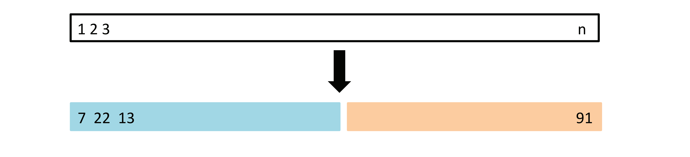
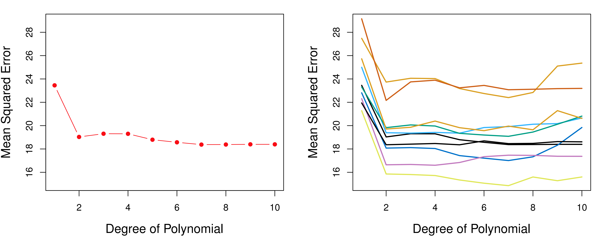
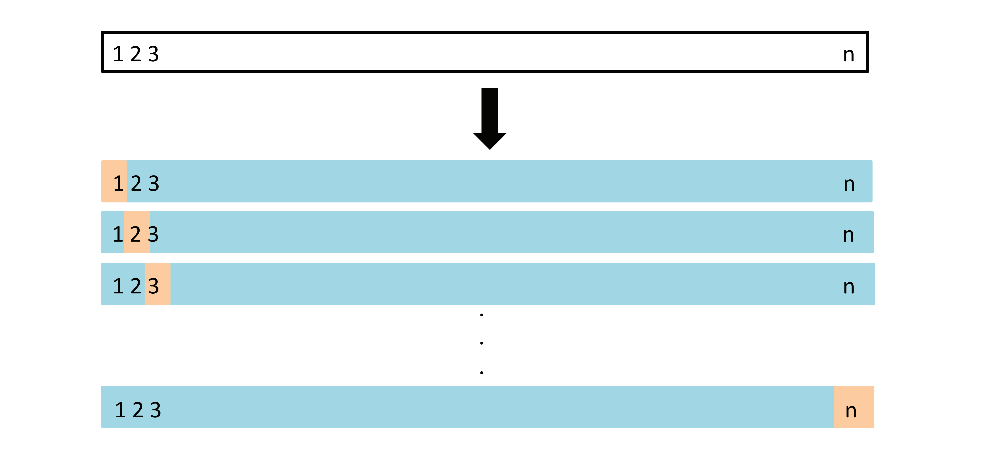
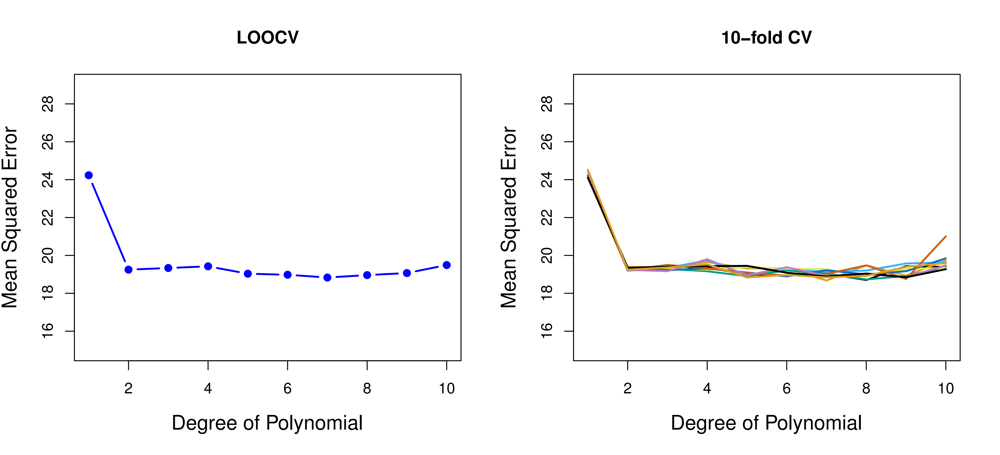
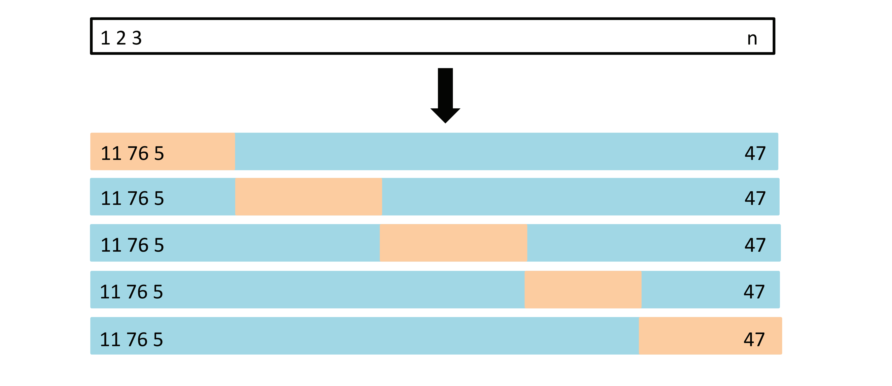
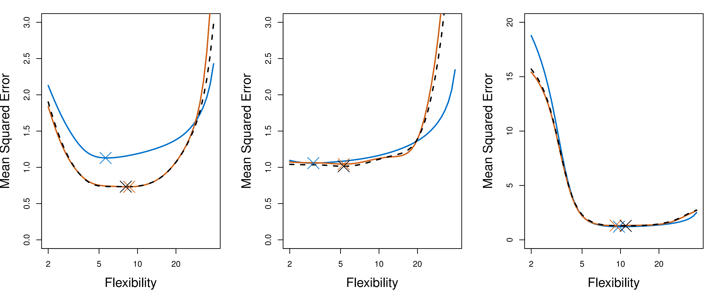
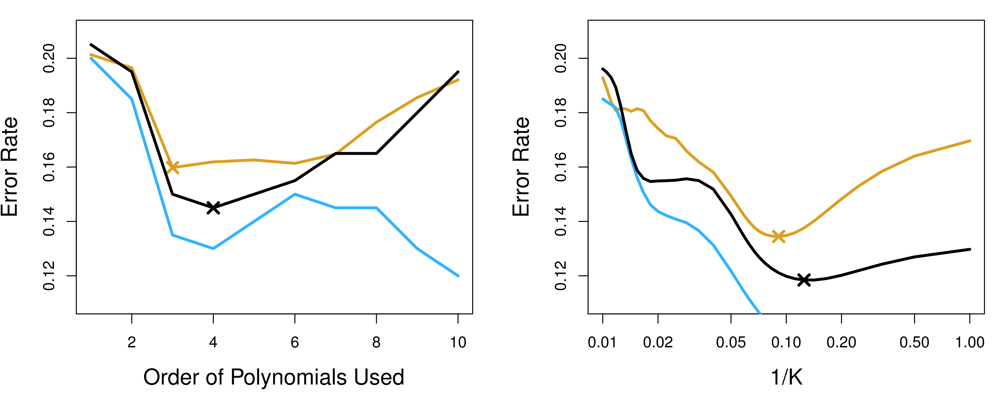
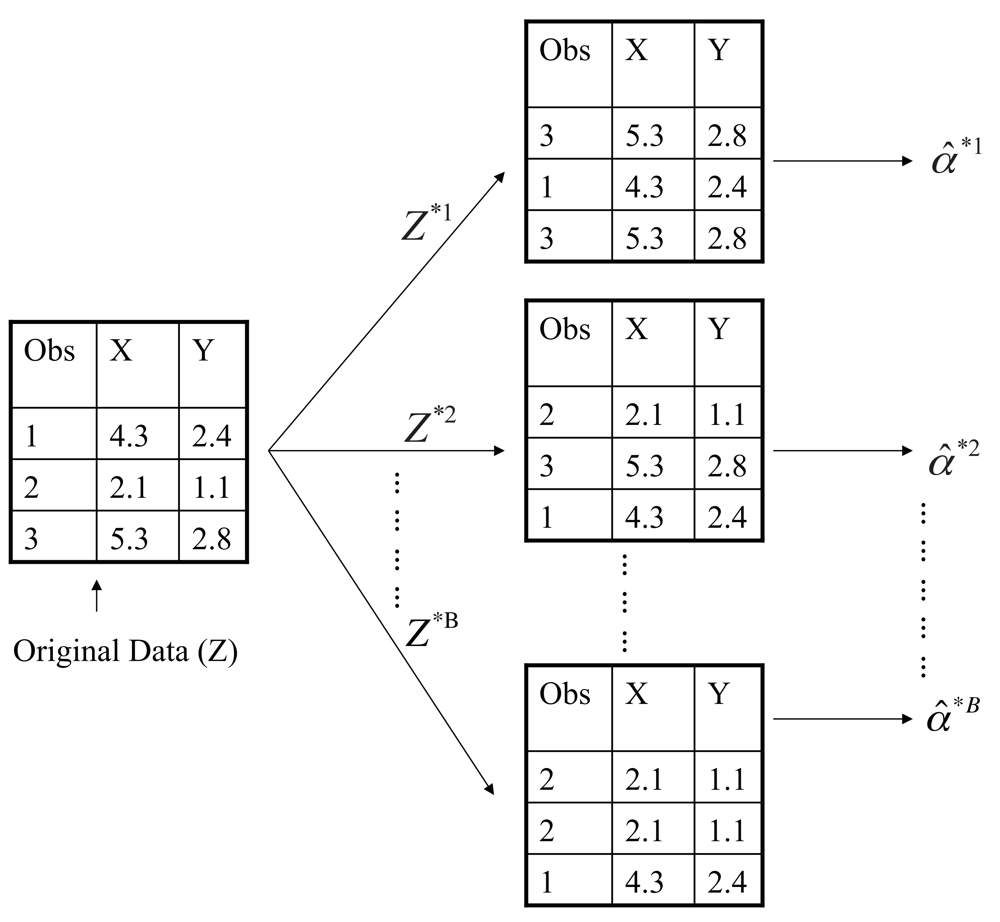
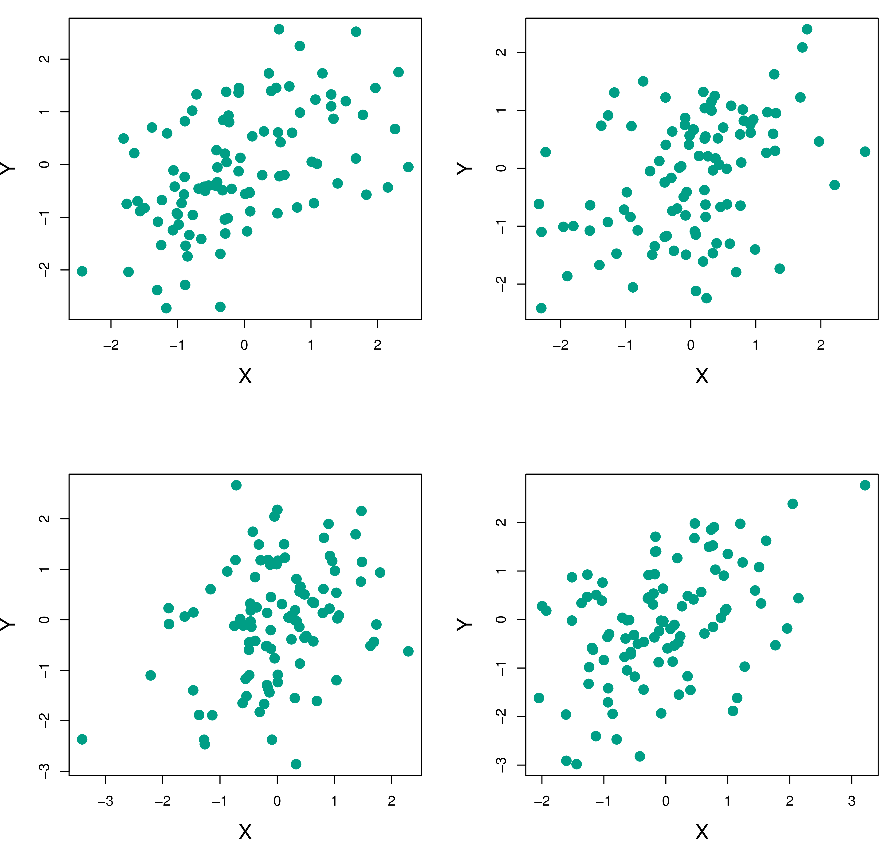

Introduction
Welcome to Chapter 5: Resampling Methods!
This chapter introduces powerful statistical techniques that help us better understand and utilize our models.

What are Resampling Methods?
Resampling methods are indispensable tools in modern statistics.
They involve repeatedly drawing samples from a training set and refitting a model of interest on each sample.
- This allows us to obtain additional information about the fitted model, such as the variability of a linear regression fit.
- This kind of information might be difficult to get from the original training sample alone.
Resampling approaches can be computationally expensive but are usually not prohibitive because they involve fitting the same statistical method multiple times using different data subsets.
Key Concepts
- Model Assessment: Evaluating a model’s performance (e.g., estimating test error).
- Model Selection: Choosing the appropriate level of flexibility for a model.
- Bootstrap: A method to measure the accuracy of a parameter estimate or a statistical learning method.
Why Resampling?
Imagine you fit a linear regression model. How confident are you in the coefficient estimates?
Resampling lets us answer this by:
- Repeatedly drawing different samples from the training data.
- Fitting the model to each new sample.
- Examining how much the resulting fits differ.
This provides insights beyond a single model fit.
Two Main Resampling Methods
We will cover the two most commonly used resampling methods:
- Cross-Validation:
- Estimating test error for model assessment.
- Selecting model complexity.
- Bootstrap:
- Quantifying uncertainty (e.g., standard errors) of estimates.
- Useful when standard statistical software doesn’t provide the uncertainty information you need.
Cross-Validation: Introduction
Remember the distinction between test error and training error (from Chapter 2)?
- Training Error: Calculated on the data used to train the model. It often underestimates the test error.
- Test Error: The average error on new, unseen data. This is what we really care about!
- We want statistical learning methods that yield low test error.
Ideally, we’d have a large, separate test set to estimate test error directly. Often, we don’t!
Cross-validation helps us estimate test error using only the available training data.
The Core Idea of Cross-Validation
- Hold Out Data: We hold out a subset of the training data.
- Train and Predict: We train the model on the remaining data and then predict the held-out observations.
- Estimate Test Error: Because the held-out data wasn’t used for training, the prediction error on this subset gives us an estimate of the test error.
- There are a few different ways to do this hold-out, leading to different cross-validation techniques.
- A schematic display of the validation set approach. A set of n observations are randomly split into a training set (shown in blue) and a validation set (shown in beige).
5.1.1 The Validation Set Approach
Simplest form of cross-validation.
Procedure:
- Randomly divide the data into two parts:
- Training set: Used to fit the model.
- Validation set (or hold-out set): Used to estimate test error.
- Fit the model on the training set.
- Predict the responses for the observations in the validation set.
- Calculate the validation set error (e.g., MSE for regression). This is our estimate of the test error.
- Randomly divide the data into two parts:
Validation Set Approach: Example (Auto Data)
Recall the
Autodata set (Chapter 3). We saw a non-linear relationship betweenmpgandhorsepower.We can use the validation set approach to see if a quadratic or cubic model predicts
mpgbetter than a linear model.
Validation Set Approach: Example (Auto Data)
- Left Panel: Shows the validation set MSE for a single random split of the data. The quadratic model has lower MSE than the linear model.
- Right Panel: Shows validation set MSE for ten different random splits. Notice the variability!

Validation Set Approach: Drawbacks
High Variability: The test error estimate can vary significantly depending on which observations end up in the training and validation sets (as seen in the previous slide).
Overestimation of Test Error: Only a subset of the data is used for training. Models tend to perform worse with less data, so the validation set error may overestimate the test error of a model trained on the entire dataset.
5.1.2 Leave-One-Out Cross-Validation (LOOCV)
Addresses the drawbacks of the validation set approach.
Procedure:
- For each observation i in the dataset (from 1 to n):
- Hold out observation i as the validation set.
- Train the model on the remaining n-1 observations.
- Predict the response for observation i (using its predictor values).
- Calculate the error for observation i (e.g.,
(yi - ŷi)²for regression).
- Calculate the LOOCV estimate of the test MSE as the average of these n individual errors:
\[ CV_{(n)} = \frac{1}{n}\sum_{i=1}^{n}MSE_i \]
- For each observation i in the dataset (from 1 to n):
LOOCV: Visualized

- A schematic display of LOOCV. A set of n data points is repeatedly split into a training set (shown in blue) containing all but one observation, and a validation set that contains only that observation (shown in beige). The test error is then estimated by averaging the n resulting MSEs.
LOOCV: Advantages
- Less Bias: LOOCV uses almost all the data (n-1 observations) for training in each iteration. This leads to a less biased estimate of the test error compared to the validation set approach.
- No Randomness: Unlike the validation set approach, LOOCV always produces the same result because there’s no random splitting.
LOOCV: Auto Data Example

- Left Panel: The LOOCV error curve for different polynomial models predicting
mpgfromhorsepower. - Right Panel: Shows multiple 10-fold CV curves.
LOOCV: A Computational Shortcut
- LOOCV can be computationally expensive, requiring n model fits.
- Shortcut for Least Squares Linear/Polynomial Regression: There’s a magic formula!
\[ CV_{(n)} = \frac{1}{n}\sum_{i=1}^{n}\left( \frac{y_i - \hat{y}_i}{1 - h_i} \right)^2 \]
- \(\hat{y}_i\) is the ith fitted value from the original least squares fit.
- \(h_i\) is the leverage (a measure of how much an observation influences its own fit).
- Key Point: This formula lets us calculate LOOCV with the cost of just one model fit!
- This shortcut does not generally apply to other models (like logistic regression).
5.1.3 k-Fold Cross-Validation
A compromise between the validation set approach and LOOCV.
Procedure:
- Randomly divide the data into k groups (or “folds”) of approximately equal size.
- For each fold j (from 1 to k):
- Treat fold j as the validation set.
- Train the model on the remaining k-1 folds.
- Compute the error (e.g., MSE) on the held-out fold j.
- Calculate the k-fold CV estimate as the average of the k errors:
\[ CV_{(k)} = \frac{1}{k}\sum_{i=1}^{k}MSE_i \]
k-Fold CV: Visualized

- A schematic display of 5-fold CV. A set of n observations is randomly split into five non-overlapping groups. Each of these fifths acts as a validation set (shown in beige), and the remainder as a training set (shown in blue). The test error is estimated by averaging the five resulting MSE estimates.
k-Fold CV: Choosing k
- Common choices for k are 5 or 10.
- Computational Advantage: k-fold CV (with k < n) is less computationally expensive than LOOCV. It only requires k model fits, not n.
5.1.4 Bias-Variance Trade-Off for k-Fold CV
- Bias:
- LOOCV is nearly unbiased (uses almost all data for training).
- k-fold CV has slightly more bias (uses (k-1)n/k observations for training).
- Validation set approach has the most bias (uses roughly half the data).
- Variance:
- LOOCV has higher variance than k-fold CV. Why? The n fitted models in LOOCV are highly correlated (they share almost all their training data). Averaging highly correlated quantities has higher variance.
- k-fold CV averages k models with less overlap in training data, leading to lower variance.
- Conclusion: 5-fold or 10-fold CV often achieves a good balance between bias and variance.
Cross-Validation on Simulated Data

- Blue: True test MSE.
- Black Dashed: LOOCV estimate.
- Orange Solid: 10-fold CV estimate.
- Crosses: Minimum points of each curve.
- The plots show that CV curves can sometimes underestimate the true test MSE, but they generally identify the correct level of flexibility.
5.1.5 Cross-Validation for Classification
- So far, we’ve focused on regression (quantitative response).
- Cross-validation works similarly for classification (qualitative response).
- Instead of MSE, we use the number of misclassified observations to quantify error.
- For example, the LOOCV error rate is:
\[ CV_{(n)} = \frac{1}{n}\sum_{i=1}^{n}Err_i \]
where \(Err_i = I(y_i \neq \hat{y}_i)\) (1 if misclassified, 0 otherwise).
CV for Classification: Example

- Purple Dashed Line: Bayes decision boundary.
- Black Lines: Decision boundaries from logistic regression with different polynomial degrees.
CV for Classification: Example (cont.)

- Left: Logistic regression with polynomial terms.
- Right: KNN classifier with different values of K.
- Brown: True test error.
- Blue: Training error.
- Black: 10-fold CV error.
- Cross-validation curves often underestimate the true test error but identify the minimum.
5.2 The Bootstrap
- A powerful and widely applicable tool to quantify the uncertainty of an estimator or statistical learning method.
- Example: Estimating the standard errors of regression coefficients. (Standard software does this for linear regression, but the bootstrap is useful in more general cases).
Bootstrap: The Core Idea
- Problem: We usually can’t generate new samples from the population.
- Bootstrap Solution: We repeatedly sample observations with replacement from the original data set to create bootstrap data sets.
- With Replacement: The same observation can appear multiple times in a bootstrap data set.
- We treat the original data set as if it were the population.
Bootstrap: Visualized

- A graphical illustration of the bootstrap approach on a small sample containing n = 3 observations. Each bootstrap data set contains n observations, sampled with replacement from the original data set.
Bootstrap: Procedure
- Create B bootstrap data sets (each of size n) by sampling with replacement from the original data.
- For each bootstrap data set, calculate the statistic of interest (e.g., a regression coefficient). This gives you B bootstrap estimates.
- Estimate the standard error of the statistic using the standard deviation of the B bootstrap estimates. \[SE_B(\hat{\alpha}) = \sqrt{\frac{1}{B-1} \sum_{r=1}^B \left( \hat{\alpha}^{*r} - \frac{1}{B}\sum_{r'=1}^B \hat{\alpha}^{*r'} \right)^2}\]
Bootstrap: Investment Example
- We want to invest in two assets, X and Y, and minimize the risk (variance) of our investment.
- The optimal fraction (α) to invest in X is given by a formula involving the variances and covariance of X and Y returns.
\[ \alpha = \frac{\sigma_Y^2 - \sigma_{XY}}{\sigma_X^2 + \sigma_Y^2 - 2\sigma_{XY}} \]
- In practice, the population variances and covariance are unknown.
Bootstrap Example Continued

- Each panel shows 100 simulated returns for investments X and Y.
Bootstrap: Example (cont.)

- Left: Histogram of α estimates from 1,000 simulated data sets.
- Center: Histogram of α estimates from 1,000 bootstrap samples from a single data set.
- Right: Boxplots comparing the two.
- The bootstrap accurately estimates the variability of α!
Summary
- Resampling methods are crucial for:
- Assessing model performance (cross-validation).
- Quantifying uncertainty (bootstrap).
- Cross-validation:
- Estimates test error by holding out data.
- Validation set, LOOCV, and k-fold CV are common techniques.
- k-fold CV often provides a good bias-variance trade-off.
- Bootstrap:
- Estimates uncertainty by resampling with replacement from the original data.
- Widely applicable, especially when standard error formulas are unavailable.
Thoughts and Discussion 🤔
- When might you prefer LOOCV over k-fold CV, despite the higher computational cost?
- Can you think of situations where the bootstrap would be particularly useful?
- How do these resampling methods relate to the concepts of bias and variance we discussed in earlier chapters?
- What are the limitations of these methods? When might they not be appropriate?